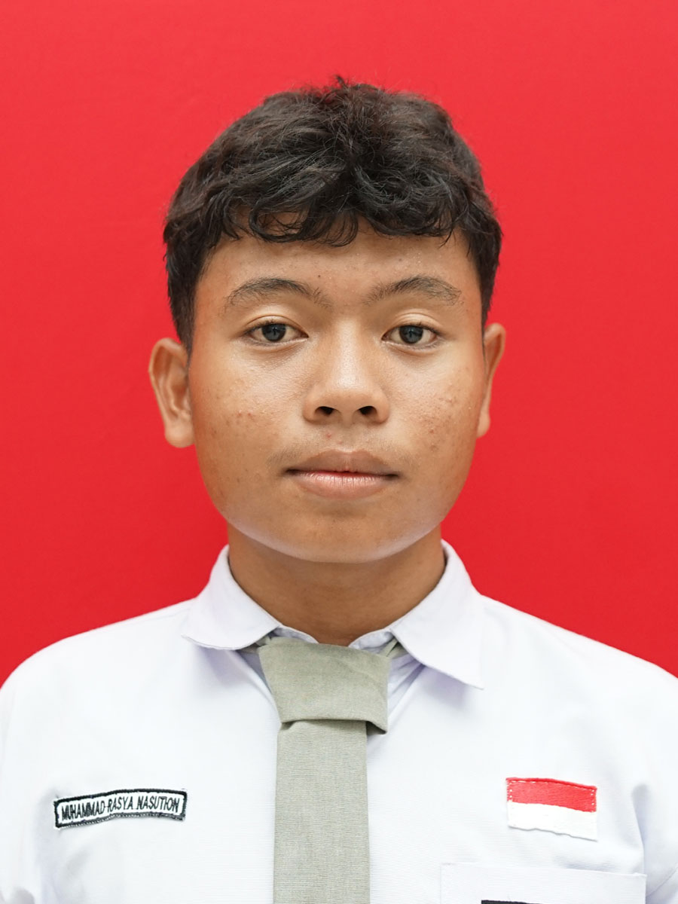

Halo! Saya adalah pembuat website ini. Sebagai siswa jurusan Rekayasa Perangkat Lunak di SMK Negeri 3 Medan, saya mendalami ilmu pemrograman web, penciptaan dan pengembangan aplikasi interaktif, serta desain antarmuka pengguna (UI/UX). Website modern ini merupakan representasi dari dedikasi dan keterampilan saya dalam menguasai HTML, CSS, dan JavaScript secara profesional.